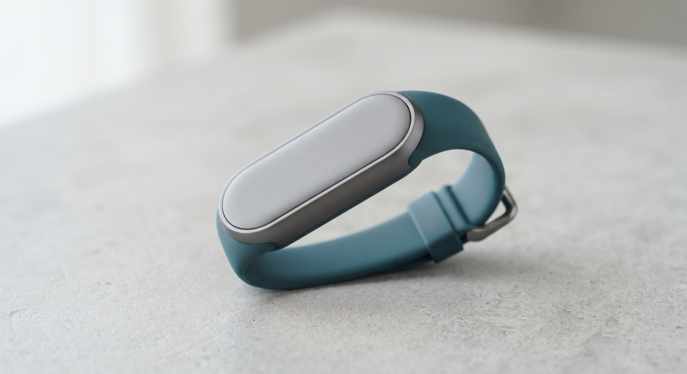
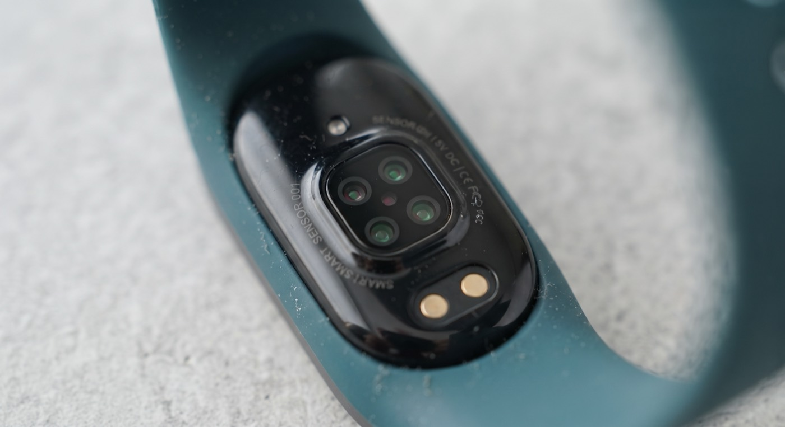

Браслет для контроля здоровья под собственным брендом: медицинское изделие дешевле массового фитнес-трекера. Расчёт производства, клинической базы, регистрации и экономики первой партии.
Продаём не браслет, а медицинский надзор. Устройство идёт с минимальной наценкой, деньги приходят от мониторинга и подписок.
Заказываем в Китае контрактное производство браслета без экрана — по образцу Whoop. Устройство измеряет пульс, вариабельность ритма, насыщение крови кислородом, температуру кожи, сон и активность. Данные идут в приложение Damumed, где появляется раздел «Здоровье», и на панель врача в медицинской информационной системе.
Регистрируем как медицинское изделие, держатель удостоверения — Damumed. Это дольше и дороже, чем продавать фитнес-гаджет, но открывает поликлиники и право говорить о медицине. Носимых устройств с регистрационным удостоверением на рынке Казахстана сегодня нет.


С 1 сентября 2026 года новая редакция приказа № ҚР ДСМ-39 обязывает медицинские организации применять носимые устройства и передавать показатели в цифровые системы. Норма вступает в силу — предложения на рынке нет.
Программа управления заболеваниями покрывает ровно наши целевые диагнозы — гипертонию, диабет 2 типа и сердечную недостаточность. В ней более миллиона пациентов, а регистрация участников уже идёт через медицинскую информационную систему.
Решение — опустить цену настолько, насколько позволяет экономика. Рекламное утверждение, которое конкурентам нечем перебить: медицинское изделие стоит дешевле обычного фитнес-браслета.
| Что | Цена | Смысл |
|---|---|---|
| Браслет в рознице | 14 990 ₸ | в рассрочку на год — 1 250 ₸/мес |
| Подписка «медицинский надзор» | 690 ₸/мес | ниже любой психологической планки |
| Браслет поликлинике | 6 900 ₸ | оснащение участка без сложных процедур |
| Мониторинг для поликлиники | 500 ₸/пациент/мес | менее трети подушевого норматива |
Цена мониторинга подобрана так, чтобы возражение «дорого» снималось арифметикой: комплексный подушевой норматив — около 1 675 ₸ на прикреплённого в месяц, а один аутсорсный вызов скорой обходится поликлинике в 4 800 ₸. Наблюдение пациента за 500 ₸ в месяц дешевле одного такого вызова в девять с половиной раз.
Насколько глубоко имеет смысл опускать цену. Каждый следующий шаг вниз оплачивается размером партии: снижать цену, не увеличивая заказ, — это менять прибыль на убыток.
| Уровень | Розница | Подписка | Поликлинике | Мониторинг | Как читается на полке |
|---|---|---|---|---|---|
| I. Текущий | 14 990 ₸ | 690 ₸ | 6 900 ₸ | 500 ₸ | на треть дешевле Xiaomi Band 10 |
| II. Ниже | 11 990 ₸ | 490 ₸ | 5 500 ₸ | 400 ₸ | вдвое дешевле Xiaomi, дешевле Huawei Band 10 |
| III. Ещё ниже | 9 990 ₸ | 390 ₸ | 4 500 ₸ | 300 ₸ | ниже психологического порога 10 тысяч |
| Уровень | Партия 10 тыс | Партия 20 тыс | Мин. партия | Предел закупочной цены | Сервис в месяц |
|---|---|---|---|---|---|
| I. Текущий | +20,0 млн | +93,9 млн | 7 500 | $11,5 | 4,1 млн ₸ |
| II. Ниже | −3,4 млн | +47,2 млн | 10 750 | $12,4 | 3,2 млн ₸ |
| III. Ещё ниже | −20,8 млн | +12,5 млн | 16 250 | $8,8 | 2,5 млн ₸ |
Дело не только в прибыли за два года. Уровень III оставляет узкий запас по закупочной цене: если завод даст $8,8 вместо $7,5 — а это внутри обычного переговорного разброса, — проект уходит в ноль. Уровень I держит до $11,5 и переживает и подорожание, и провал одного канала продаж.
Второе — выручка от мониторинга: 4,1 млн ₸ в месяц на уровне I против 2,5 млн на уровне III. За три года после распродажи партии разница составляет 60 млн ₸ — больше, чем вся прибыль от первой партии.
Уровень I на партии 10 000 либо уровень II на партии 20 000. Первый вариант — осторожный вход с проверкой спроса. Второй — ставка на охват: цена вдвое ниже Xiaomi даёт прибыль почти вдвое больше (+47 млн против +20 млн), но требует вдвое большего закупа и заранее найденных поликлиник.
Уровень III имеет смысл только как инструмент госзакупа: если появляется централизованный заказ на 20–30 тысяч устройств, цена ниже 10 тысяч тенге снимает вопросы о цене вообще. Как розничная цена первой партии он не оправдан.
Низкая цена возможна потому, что программную часть делает команда Damumed. Вложения помимо партии — только регистрация и образцы.
Двух вещей: реальной закупочной цены по нашей спецификации — она станет известна после ответов заводов, и готовности поликлиник платить за мониторинг — это проверяется двумя-тремя разговорами с главными врачами до заказа партии.
Четыре группы пациентов, отобранные по двум признакам: браслет даёт по ним осмысленный сигнал, и группа достаточно велика.
| Группа | Что видит браслет | Пилот |
|---|---|---|
| Сердечная недостаточность | ночной пульс, вариабельность ритма, активность, вес — предвестники декомпенсации за несколько дней до симптомов | 2 000 |
| Гипертония 65+ | скрининг мерцательной аритмии по пульсовой волне — самый доказанный сценарий для носимых устройств в мире | 4 500 |
| Лёгочные болезни | насыщение крови кислородом и частота дыхания — единственный сигнал, которого нет ни у одного другого домашнего прибора | 1 500 |
| Диабет 2 типа | сон, активность, комплаенс — поведенческий контур в готовой рамке программы управления заболеваниями | 1 500 |
| Резерв на замену и демонстрации | 500 | |
Он не измеряет давление: оптические методы без манжеты не признаются ни одним обществом по гипертонии. Не измеряет глюкозу. Насыщение кислородом на запястье — это тренд, а не клинический пульсоксиметр. Для гипертоника браслет полезен как дисциплина измерений и контроль ритма, а не замена тонометру, и так он и должен продаваться. Обещание, которого прибор не выполняет, стоит дороже любой маржи.
Браслет без экрана — значит продукт целиком живёт в приложении. Разобрали, как устроены Whoop, Oura, Ultrahuman, Fitbit, Apple и клинические платформы дистанционного наблюдения, и собрали свой раздел на их сильных приёмах.
| Продукт | Главный экран | Ключевая идея | Подписка |
|---|---|---|---|
| Whoop | три числа: восстановление, нагрузка, сон | три уровня раскрытия — статус, тренд, сырые данные; на первом экране ни одного графика | от $199/год |
| Oura | оценка готовности и её составляющие | разбивка оценки мини-барами: видно, что именно просело; именованные паттерны сна | $5,99/мес |
| Apple Vitals | пять метрик против личного коридора | 7 ночей калибровки, «типично / выброс», тревога только при двух метриках сразу | нет |
| Ultrahuman | лента модулей | модульность: пользователь включает нужные функции сам | маркетплейс модулей |
| Fitbit / Google | оценка готовности и сна | архетипы сна вместо статистики — понятны непрофессионалу | $9,99/мес |
| Клинические платформы | список пациентов у врача | разметка исхода тревоги, отчёт к приёму на один лист, работа с потоком ложных сигналов | контракт с клиникой |
Искусственный интеллект-советник. У Whoop и Oura есть чат-помощник, у нас его не будет: медицинское программное обеспечение с ИИ автоматически получает высший класс риска. Вместо него — прозрачные правила и коридоры.
Оценка давления по браслету. Whoop получил за такую функцию предупреждение американского регулятора летом 2025 года. Мы измеряем давление манжетой и вносим в дневник.
Диагнозы и тревоги в реальном времени пациенту. Приложение не говорит «у вас аритмия» — оно говорит «покажите это врачу», а числовой контекст уходит на панель врача. Спортивные метрики, соревнования и рейтинги тоже не берём: аудитория другая.
Семь ключевых экранов. Крупный шрифт, контрастные цвета и большие кнопки — расчёт на пользователя 65+.
Главное требование — не добавить врачу работы. Зелёные пациенты не отвлекают, красные поднимаются наверх с готовым контекстом.
| Пациент | Диагноз | Состояние | Что случилось | Действие |
|---|---|---|---|---|
| А-ва Г. 1954 браслет 41 день · носит 92% ночей |
ХСН IIБ | Красный | Вес +2,3 кг за 3 дня и ночной пульс 74 при коридоре 58–66 два сигнала сразу, держится 3 дня |
Позвонить сегодня вызов · телеконсультация · ложная тревога |
| К-ва А. 1958 браслет 67 дней · носит 88% ночей |
Гипертония, 68 лет | Жёлтый | Два эпизода нерегулярного ритма за неделю | Записать на приём |
| С-ов Б. 1961 браслет 12 дней · носит 41% ночей |
Гипертония | Жёлтый | Почти не носит браслет — данных для наблюдения нет | Медсестре: позвонить, помочь |
| Остальные 140 в своих коридорах |
ХСН · АГ · СД2 · ХОБЛ | Зелёный | Без отклонений | — |
Проверено двенадцать контрактных заводов. Решает не цена, а доступ к данным устройства и наличие системы качества.
| Завод | Мин. партия | Система качества | Доступ к данным | Замечание |
|---|---|---|---|---|
| J-Style Shenzhen Youhong Medical |
2 000 | ISO 13485 ✓ | полный комплект + интерфейс обмена | единственный готовый к медицинской регистрации |
| Eternity Guangdong |
500 | не подтверждена | требует проверки | самая низкая цена, 10+ моделей без экрана |
| Wonlex | 1 000 | нет | комплект проверяем до контракта | лучшая начинка, честно признают отсутствие сертификатов |
Главное условие контракта: устройство отдаёт данные напрямую в приложение Damumed, без облака производителя. Браслеты, работающие только через чужое приложение, дисквалифицируются — с ними невозможна ни интеграция с медкартой, ни хранение данных в Казахстане.
Сроки у всех схожие: образцы через 4–6 недель после запроса, серийная партия — через 8–12 недель после утверждения образца.
Класс риска 2а, национальная процедура, держатель удостоверения — Damumed. Два решения приняты заранее, чтобы не поднимать класс.
Без ЭКГ в первой версии. Функция электрокардиограммы и тревоги в реальном времени поднимают класс риска до 2б, а это обязательная система менеджмента качества и инспекция китайского завода. ЭКГ — кандидат на вторую версию отдельной моделью.
Аналитика без искусственного интеллекта. Медицинское программное обеспечение с ИИ автоматически получает третий, высший класс риска. Поэтому пороги и коридоры показателей считаются прозрачными правилами. Это осознанное ограничение, а не упрощение.
Государственная часть расходов на регистрацию — около 1 млн ₸ (экспертиза, испытания, сбор). Реальный бюджет с подготовкой досье и лабораторными работами — 5–20 млн ₸, в расчёт заложено 15 млн. Данные пациентов хранятся только в Казахстане: этого требуют закон о персональных данных и врачебная тайна, и это же закрывает вопрос китайского облака.
| Риск | Чем снимается |
|---|---|
| Завод не даёт доступ к данным или документацию для регистрации | Проверка до предоплаты: комплект разработчика и техническое досье — условие контракта, а не пожелание |
| Регистрация затянется дольше 18 месяцев | Выбор завода с европейским сертификатом открывает ускоренную экспертизу; удостоверение бессрочное, повторять процедуру не придётся |
| Поликлиники не готовы платить за мониторинг | Проверяется двумя-тремя разговорами до заказа партии; при отказе модель разворачивается в сторону розницы, где маржа с устройства втрое выше |
| Пациенты не носят браслет | Пилот на 500–1 000 штук в одной-двух поликлиниках; главный показатель — доля ночей с данными, цель не ниже 70% |
| Закупочная цена окажется выше плана | Запас цены держит до $11,5 за устройство; выше — поднимаем розницу до 19 990 ₸, она всё равно ниже Xiaomi |
Проект ставит Damumed в позицию, которую в Казахстане никто не занял: единственное носимое устройство со статусом медицинского изделия, встроенное в медкарту и рабочее место врача, и при этом дешевле массового фитнес-браслета.
Поликлиники получают инструмент исполнения новых требований по дистанционному наблюдению. Пациенты — прибор с медицинским надзором за цену, которая не требует раздумий. Компания — повторную выручку от мониторинга и подписок поверх продаж устройств: около 4 млн ₸ в месяц при распроданной партии, и эти деньги не заканчиваются вместе с партией.
Первая партия окупается менее чем за два года. Созданная инфраструктура — регистрационное удостоверение, интеграция с медицинской системой и панель врача — становится барьером для любого следующего игрока: повторить её стоит тех же восемнадцати месяцев.
Всё, что нужно для решения: документы, расчёты и полные тексты.
Документы скачиваются по ссылкам ниже. Там же — полноразмерный калькулятор и полные тексты, которые можно скопировать со страницы.
Двигайте параметры — расчёт пересчитывается сразу. Это та же модель, по которой построены все графики выше.
Дата: 31 августа 2026 г. Основание: комплексное исследование производства, клинической модели, регуляторики, рынка и экономики (материалы приложены).
Выпускаем под брендом Damumed браслет для контроля здоровья: устройство без экрана (по образцу Whoop), производство — контрактный завод в Китае, партия около 10 000 штук. Браслет измеряет пульс, вариабельность ритма, насыщение крови кислородом, температуру кожи, сон и активность. Все данные идут в приложение Damumed, где появляется новый раздел «Здоровье», и на панель врача в медицинской информационной системе.
Регистрируем устройство как медицинское изделие, держатель удостоверения — Damumed. Это дольше, чем продавать «фитнес-гаджет», но открывает поликлиники, госпрограммы и право говорить о медицине в маркетинге. Носимых устройств с регистрационным удостоверением на рынке Казахстана сегодня нет — мы будем первыми.
1. С 1 сентября 2026 года вступает новая редакция приказа № ҚР ДСМ-39: медицинские организации обязаны использовать носимые устройства и передавать их показатели в цифровые системы. Норма есть — предложения на рынке нет. 2. Программа управления заболеваниями покрывает ровно наши целевые диагнозы (гипертония, диабет 2 типа, сердечная недостаточность), в ней более миллиона пациентов, и регистрация в программе уже идёт через медицинскую информационную систему.
Принципиальное решение — не зарабатывать на железе. Устройство продаётся с минимальной наценкой, деньги приходят от сервиса мониторинга и подписок.
| Что | Цена | Смысл |
|---|---|---|
| Браслет в рознице | **14 990 ₸** | на треть дешевле Xiaomi Smart Band 10 (21 989 ₸) |
| Подписка «медицинский надзор» | **690 ₸/мес** | ниже любой психологической планки |
| Браслет поликлинике | **6 900 ₸** | оснащение участка без сложных процедур |
| Мониторинг для поликлиники | **500 ₸/пациент/мес** | менее трети подушевого норматива |
Главный рекламный аргумент, который конкурентам нечем перебить: медицинское изделие с регистрационным удостоверением стоит дешевле обычного фитнес-браслета. Это возможно потому, что программную часть делает собственная команда Damumed, и вложения ограничиваются регистрацией.
Поликлиники. Браслеты для дистанционного наблюдения пациентов с хроническими заболеваниями. Целевые группы: сердечная недостаточность, гипертония у пациентов 65+ со скринингом мерцательной аритмии, хроническая обструктивная болезнь лёгких и астма, диабет 2 типа. На учёте по этим диагнозам — миллионы пациентов: только по гипертонии 1,78 млн человек. Первая партия расписана на 5–8 поликлиник. Поликлиника получает панель наблюдения: список пациентов со светофором, тревоги, отчёты для программы управления заболеваниями.
Розница. Продажа частным покупателям через Kaspi и приложение Damumed. Цена 14 990 тенге, в рассрочку на год — около 1 250 тенге в месяц. Мы продаём не железо, а надзор: данные в медкарте, врач видит отклонения.
Проверено 12 контрактных заводов. Короткий список — три: J-Style (единственный с сертификатом системы менеджмента качества медизделий, готовым комплектом для интеграции и минимальной партией 2 000 штук), Eternity и Wonlex (дешевле и техничнее, но систему качества придётся закрывать самим). Цена устройства на заводе при партии 10 000 — от 7 до 13 долларов; в расчёт заложена нижняя граница как цель переговоров. Ключевое условие контракта: полный доступ к данным устройства без облака производителя — без этого интеграция с Damumed невозможна. Запрос заводам подготовлен.
Класс риска 2а, национальная процедура, держатель удостоверения — Damumed. Из принципиального: функцию ЭКГ в первую версию не берём (поднимает класс и требует инспекции завода), аналитика строится на прозрачных правилах без искусственного интеллекта (иначе класс 3), данные храним только в Казахстане. Срок от контракта до удостоверения — 14–18 месяцев. Бюджет регистрации — 5–20 млн тенге, в расчёт заложено 15 млн.
1. Себестоимость устройства на складе — около 4 000 тенге. 2. Партия 10 000 штук — около 40 млн тенге. Вложения помимо партии: только регистрация и образцы, вместе около 18 млн тенге. 3. Маржа с устройства: в поликлиники — около 2 750 тенге, в рознице (за вычетом комиссии Kaspi) — около 8 900 тенге. 4. Повторная выручка: мониторинг для поликлиник и розничные подписки — вместе около 4 млн тенге в месяц при полностью распроданной партии, и эта сумма не заканчивается вместе с партией. 5. Итог: окупаемость на 21-й месяц от контракта, результат к 24-му месяцу — около +20 млн тенге. При партии 20 000 штук те же цены дают +94 млн тенге. 6. Запас прочности двойной. По закупочной цене — проект остаётся в плюсе, даже если завод даст 11,5 доллара вместо плановых 7,5. По цене продажи — розницу можно опускать до 7 350 тенге, если держать цену для поликлиник; при одновременном снижении обеих цен предел выше — около 11 000 тенге.
1. Завод не даст полного доступа к данным или техническую документацию для регистрации — снимается выбором завода и условиями контракта до предоплаты. 2. Затяжка регистрации за 18 месяцев — смягчается выбором завода с европейским сертификатом (открывает ускоренную экспертизу). 3. Готовность поликлиник платить за мониторинг не проверена — проверяется двумя-тремя разговорами с главными врачами до заказа партии. 4. Пациенты не будут носить браслет — снимается дизайном пилота: сначала 500–1000 штук в 1–2 поликлиниках, затем масштаб.
Проект ставит Damumed в позицию, которую в Казахстане пока никто не занял: единственное носимое устройство со статусом медицинского изделия, встроенное в медкарту и рабочее место врача, и при этом дешевле массового фитнес-браслета. Поликлиники получают инструмент исполнения новых требований по дистанционному наблюдению, пациенты — прибор с медицинским надзором за цену, которая не требует раздумий, компания — повторную выручку от мониторинга и подписок поверх продаж устройств. Первая партия окупается менее чем за два года, а созданная инфраструктура — регистрационное удостоверение, интеграция и панель врача — становится барьером для любого следующего игрока.
Тема: Запрос статистических данных по диспансерному наблюдению и программе управления заболеваниями
Уважаемые коллеги!
Прошу предоставить данные, необходимые для проработки проекта дистанционного наблюдения пациентов с хроническими заболеваниями с использованием носимых устройств. Проект прорабатывается в связи с вступлением в силу новой редакции приказа Министра здравоохранения № ҚР ДСМ-39, обязывающей медицинские организации применять носимые устройства и передавать их показатели в цифровые системы.
Интересуют следующие сведения за последний завершённый отчётный период:
1. Численность лиц, состоящих на диспансерном учёте, по классам болезней: – хроническая сердечная недостаточность (I50); – фибрилляция и трепетание предсердий (I48); – артериальная гипертензия (I10–I15); – сахарный диабет 2 типа (E11); – хроническая обструктивная болезнь лёгких (J44) и бронхиальная астма (J45).
2. Возрастной разрез по указанным классам: доля лиц 65 лет и старше.
3. Текущее число участников программы управления заболеваниями и охват в процентах от подлежащих включению, с разбивкой по трём нозологиям программы (артериальная гипертензия, сахарный диабет 2 типа, хроническая сердечная недостаточность).
4. Действующий порядок оплаты дистанционного наблюдения хронических больных: применяется ли отдельный тариф, либо услуга покрывается комплексным подушевым нормативом. Если тариф существует — реквизиты приказа и размер.
5. Средняя стоимость одного случая госпитализации по клинико-затратным группам, связанным с декомпенсацией сердечной недостаточности и обострением хронической обструктивной болезни лёгких.
6. Наличие завершённых или действующих пилотных проектов по применению носимых устройств в первичной медико-санитарной помощи, их результаты.
7. Показатели стимулирующего компонента подушевого норматива, относящиеся к динамическому наблюдению болезней системы кровообращения и сахарного диабета: методика расчёта и фактические значения в среднем по республике.
Прошу указать источник и отчётный период по каждой позиции. При наличии опубликованных сборников достаточно ссылки на соответствующие таблицы.
Что это даёт. Данные позволят рассчитать потребность в оборудовании по регионам, обосновать выбор нозологических групп и определить экономический эффект дистанционного наблюдения для первичного звена.
С уважением,